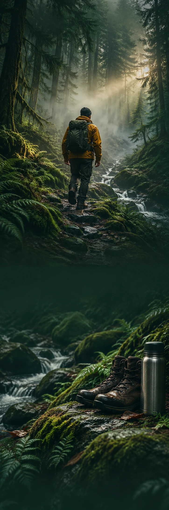

NORTH / OUT
OutdoorInspiratiecampagne
NORTH / OUT · THE LONG WAY
NEEM
DE OMWEG.
Ontdek het buitenleven NORTH / OUT / VAN DICHTBIJ
Minder bereik.
Meer buiten.
Modder aan je schoenen. Mist tussen de bomen. Een bocht die je nog niet kent. Voor het soort dag waarop de weg belangrijker wordt dan de bestemming.
01Pad kiezen
02Lucht happen
03Verder kijken
ER IS NOG
GENOEG PAD.
De beste route staat niet altijd op je planning.
Ontdek het buitenleven